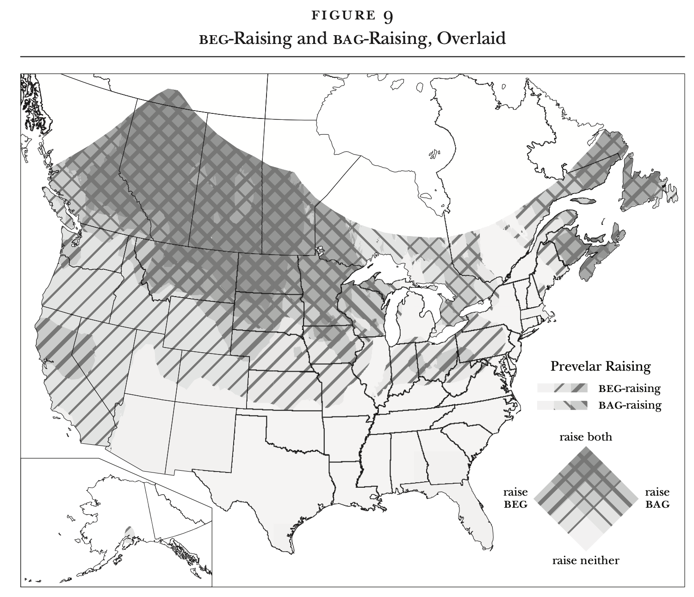
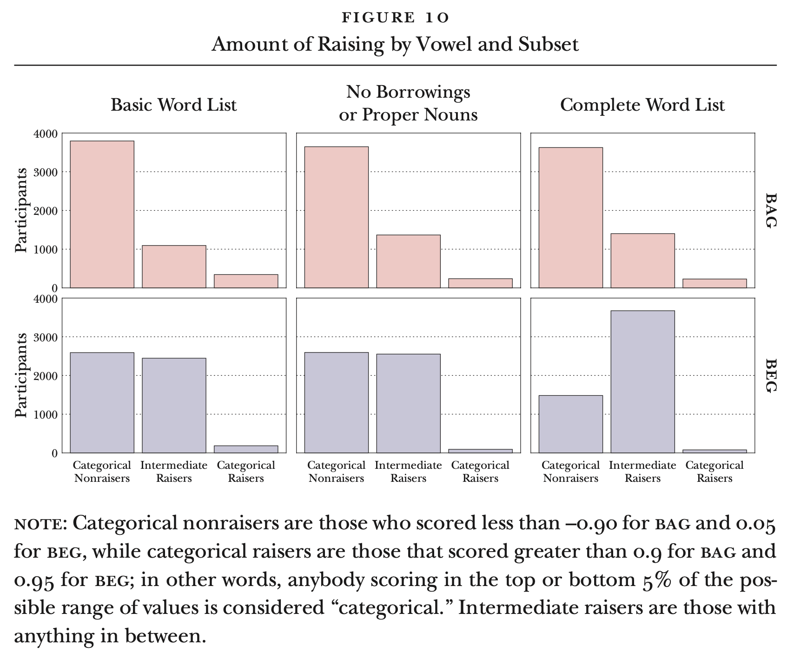

I’m thrilled to announce that a paper of mine has been published in American Speech! It’s called “Regional patterns in prevelar raising.” This one has been in the works for quite some time, so it’s very exciting to see it finally published.
Summary
Some people pronounce words like bag, flag, and dragon with a raised vowel, so that bag rhymes with vague. There are also some people who pronounce words like beg, peg, and leggings with that same raised vowel. People have studied this in a few places, most notably Wisconsin and the Pacific Northwest, but not really much anywhere else. I’m from St. Louis and I’ve got
I set up a survey that asks people to indicate how they pronounce something like 70 prevelar words. I distributed it on Reddit to get good geographic coverage. Using fancy GIS skills (thanks, Jack Grieve for helping me with that!), I was able to produce some pretty cool maps showing where you get raising. As it turns out, the regions where people reported
Anyway, I had a lot of fun with this one. There’s less work on prevelar raising at the moment compared to like five years ago when I first had the idea for the project. But that’s okay. It was fun to learn how to make cool maps.
Timeline
I take careful notes of when my projects hit major milestones. I figued I’d share those with you here:
- November 2017: I had the idea for the study. I was teaching a phonetics and phonology class and noticed that I have
beg -raising in all but about six words, and that most of my exceptions have a sonorant following the /ɡ/: integrity, interregnum, etc. On November 10, I sent out a pilot study to my friends on Facebook. I got about 350 people to take it, which was pretty cool. In my notes I said I was hesitant to do a blog post about it because “these are legit results that I could publish.” - April 2018: I presented this preliminary data at an informal “TinyTalks” event to the linguistics grad students at UGA. I started making the full version of the survey and began filling out IRB forms. Approval was soon granted.
- April–May 2018: I distributed the survey on Reddit and collected 7000 responses in two weeks. I made a plan to submit an abstract about phonological factors to NWAV and submit an abstract on regional factors to ADS.
- Summer 2018. I submitted both abstracts as planned. I’m amazed at myself that the precise plans I made in the early days of the project all happened to a tee.
- October 2018–January 2019: I presented at NWAV47 and ADS2019 as planned. I wrote up preliminary findings and submitted a manuscript to our UGA Working Papers in Linguistics. I also wrote up the results in layperson’s terms in a blog post to send to my participants.
- September 13, 2019: Submitted the manuscript to American Speech. Not quite sure why it took me so long to finish the darn thing, but it might because it was my first Real Paper™. I was motivated to get this done so that I could include it in job applications.
- December 4, 2019: Got an R&R from American Speech.
- 2020: I put off working on this for a full year. I had my dissertation defense, job interviews, a campus visit, dissertation revisions, an contract job with BYU during covid lockdown, graduation, moving to Utah, starting a new job at BYU in June, and teaching three new preps over the next six months. In November 2020 I set a goal to get this returned by the end of the year.
- December 29, 2020: Resubmitted to American Speech.
- April 8, 2021: Accept with revisions! Yay!
- June 8, 2021: Returned the manuscript. I was told by American Speech that there’s a bit of a backlog, so it’d come out in 2022.
- August 26, 2022: Got proofs from American Speech.
- October 19, 2022: Got the physical copy in the mail!
- November 2, 2022: I noticed it was published online!
So from the start of the idea until publication was just about five years. I don’t really work on prevelar raising anymore, and this was a side project I wanted to get done quickly in grad school. It’s just interesting that a project I started so long ago and presented first as a grad student was used as a writing sample for job applications, and now it’ll go in my tenure portfolio! I’ve had a few papers that I started after this one come out already, but I guess I’m particularly excited about this because it was my first manuscript submitted to a peer-reviewed journal.
Misc topics
Unofficial erratum
Figure 9 was a very tricky one to do and I created probably dozens of versions of the plot trying to find the right one. Online, you’ll see the one I settled on, which does a pretty cool thing with color where I map two different variables to color.

This is basically impossible to print in black and white though, so I was asked to make a print-friendly one. The compromise that either I or the editors came up with was to do diagonal slashes in the regions.

Unfortunately, it looks like the Figure 9 in my physical copy is just a black-and-white version of the online map, rather than the one specifically for print. This is especially confusing because the print version specifically mentions the slashes even though they’re not there. Oh well. More people will read the online version anyway.
[Update: Pretty soon after writing this, I got more physical copies in the mail. I suspected it was to correct this Figure 9 and sure enough it was. So, if you got an extra copy of that issue of American Speech, you can blame my darn complicated plot. I hope it didn’t cost the ADS too much money…]
Boustrophedonic plots
A while ago, I tweeted what would become one of my most viewed tweets:
Okay, I'm trying something out. I have this histogram with one very tall bar and many shorter ones. So to save space, I made that tall bar follow the edge of the plotting area boustrophedonically—my favorite word!—but I'm not sure if I like it. Thoughts? #dataviz pic.twitter.com/9b9QYqQJLg
— Joey Stanley (@joey_stan) December 17, 2020
I even wrote a blog post about the suggestions people gave about alternative plots.
I’ll let you in on a little secret: I was working on this paper when I came up with the idea for that plot! The data shows the distribution of
Unfortunately, the plot didn’t make it into the manuscript. I just couldn’t do it. Figure 10 is my compromise:

So, not as fun, but prehaps more normal. Do I regret not including the boustrophedonic plot? Yeah, maybe a little.